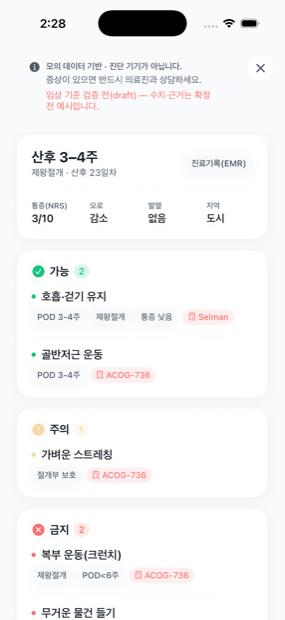
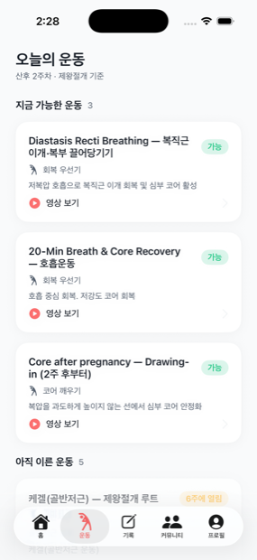
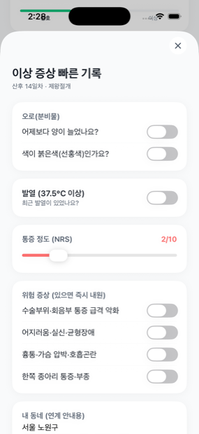
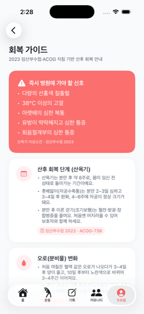
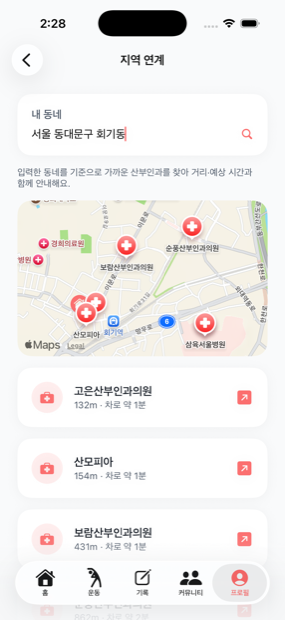
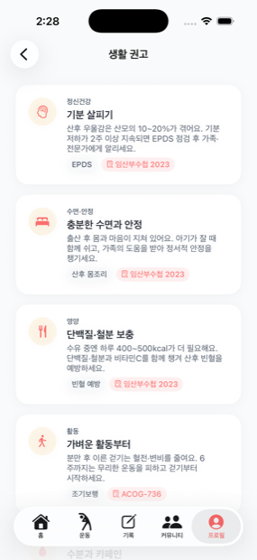
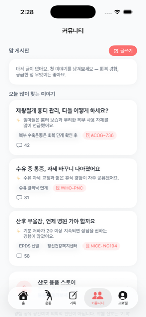
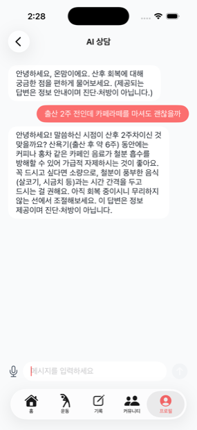
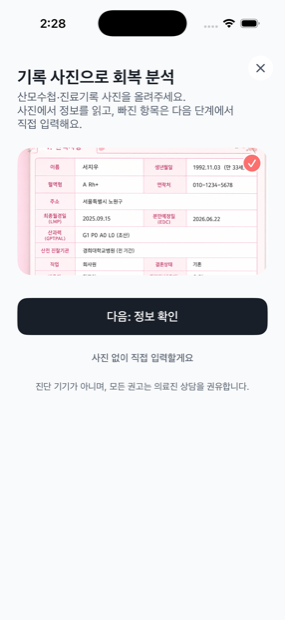

손 안의 산후 회복 코치.

회복 분석가능·주의·금지를
근거 칩과 함께

오늘의 운동지금 가능 / N주에 열림
주차별 게이팅

이상 증상 기록오로·발열·통증·
위험 신호 체크

안전 가이드즉시 병원에 가야 할
레드 플래그

지역 연계가까운 산부인과
거리·소요시간

생활 권고정신건강·수면·영양
근거 기반

맘 커뮤니티회복 경험을
함께 나눠요

AI 상담진단·처방이 아닌
정보 안내
옆으로 넘겨보세요
산후 회복은 조리원이 끝나도
끝나지 않습니다.
그 사이 ‘의료적 회복 관리’는 사각지대입니다. (산후조리원은 육아·영양 중심)
퇴원 후 지속 관리 부재
획일적 운동·정보
의료·지역·근거 연결 부재
겪는 사람은 많은데,
도움받는 사람은 드뭅니다.
보조 · 산후우울 진료 최근 5년 +54.8%
온맘이 메우는 것은 바로 이 간극입니다.
온맘은 회복을 세 축으로 관리합니다.
개인 맞춤 산후재활
문제 · 분만 형태·회복 속도·통증·수유가 다 다른데 운동은 획일적입니다.
온맘 · 분만형태 × 산후 주차로 운동을 “지금 가능 / N주에 열림”으로 게이팅합니다. (예: 기능성 근력운동 = 자연분만 6주 / 제왕절개 8주)
산후우울 및 정신건강
문제 · 산후우울은 한 번의 외래로 발견하기 어렵습니다.
온맘 · EPDS 자가점검 → 생활습관 권고 → 커뮤니티 → 필요 시 전문기관 연계. (AI 상담은 치료를 대신하지 않고 가드레일로 연계)
Red Flag 기반 안전관리
문제 · 산모는 언제 병원에 가야 하는지 모릅니다.
온맘 · 위험 신호 규칙 판정 → 운동·분석 전면 차단 → 가까운 산부인과 실시간 연계 → 필요 시 119/응급.
“AI보다 먼저 안전을 판단합니다.”
산모수첩 사진 한 장이면 됩니다.

-
1
사진 업로드
산모수첩·진료기록을 찍어 올리면 AI가 문서 종류를 판별하고 핵심 정보를 추출합니다. (못 읽은 항목은 직접 입력)
-
2
회복 프로파일로 정리
흩어진 정보가 한 장으로 — 출산방식·경과일·통증·발열·오로·수유·EPDS·지역.
-
3
오늘의 안내
가능/금지 운동 + 위험 신호 체크 + 근거 칩을 매일 안내합니다.
브릿지 운동 = POD 6주+제왕절개통증 감소ACOG 736
움직이는 온맘을 확인하세요.
▶ 재생을 눌러 사진 한 장 → 회복 안내까지 실제 흐름을 확인하세요.
AI는 읽고·정리·연결만 합니다.
결정은 규칙이 합니다.
- 문서 읽기 (OCR)
- 비정형 정보 구조화
- 영상 분류·매칭
- 자연어 요약
- 진단
- 처방
- 응급 여부 결정
- 의학적 권고 직접 생성
“AI가 못 하는 게 아니라, 안전을 위해 의도적으로 안 합니다.”
방치되지만, 근거는 이미 명확합니다.
골반저근 운동 (PFMT)
요실금 위험을 유의하게 줄일 수 있습니다.
OR 0.59 · Beamish 2025 BJSM유모차 산책 (pram walking)
산후우울(EPDS) 점수를 유의하게 낮출 수 있습니다.
RCT디지털 산후 관리 프로그램
회복·자가관리 향상에 도움이 될 수 있습니다.
Wang & Li 2026 RCT임산부수첩 2023 · ACOG 736 · WHO PNC 2022 · NICE NG194 · EPDS
회복은 앱 안에서 끝나지 않습니다 —
동네에서 연결됩니다.
주소 기반으로 가까운 산부인과·보건소를 실시간 검색(지도·거리·소요시간)하고, 지원사업(정부24 행복출산 + 지자체 사업)을 매칭합니다.
당일 외래 예약
분만병원 거리 + 응급실
119 이송
접근성 보정이지, 진단 기준 변경이 아닙니다.
회복을 지속하기 위한 도구들.
회복용품 스토어
맘 커뮤니티
생활습관 권고
지원사업 추천
의사용 요약 대시보드 예정
대부분의 서비스는 하나만 합니다.
온맘은 회복을 잇습니다.
AI 비진단 설계 = 의료 앱의 핵심 리스크(오판)를 구조적으로 통제하는 신뢰 기반.
앱이 아니라, 회복 관리 엔진입니다.
CRE 엔진 중심 → 산후회복(온맘) / 수술후재활(PIVOT) 확장.
수익모델 B2B2C(병원·조리원 지불, 산모 무료) + B2G(보건소·지자체).
(로드맵) Community Digital Twin — 지역 정책 지원 설계(향후)
앱이 출시되면,
가장 먼저 알려드릴게요.
이메일만 남겨두시면 App Store · Google Play 출시 소식을 보내드립니다.
기관 · 파트너 문의 온맘 사업 소개 · 비즈니스 모델 보기 →